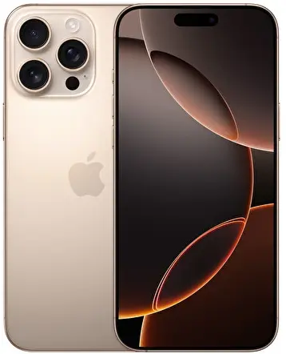
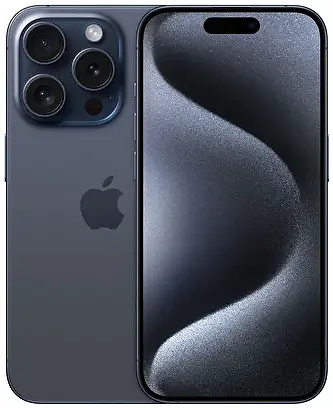
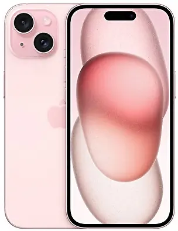

.webp)


Apple, 1976 yılında Steve Jobs, Steve Wozniak ve Ronald Wayne tarafından kurulan bir Amerikan teknoloji şirketidir. Şirketin merkezi Cupertino, Kaliforniya'da bulunmaktadır. Apple, yenilikçi ürünleri ve tasarımlarıyla tanınır ve dünya çapında en değerli teknoloji şirketlerinden biri olarak kabul edilir. Apple’ın en bilinen ürünleri arasında **iPhone**, **iPad**, **Mac bilgisayarları**, **Apple Watch** ve **AirPods** bulunmaktadır. Ayrıca, şirket yazılım alanında da önemli bir oyuncudur; **iOS**, **macOS**, **watchOS** ve **iPadOS** gibi işletim sistemleri Apple ürünlerinin çalışmasını sağlar. Bunun dışında **iTunes**, **App Store**, **iCloud** gibi bulut tabanlı hizmetler ve dijital içerik platformları da Apple'ın ekosisteminin önemli bir parçasıdır. Apple, tasarıma verdiği önemin yanı sıra, kullanıcı dostu arayüzleri ve güçlü güvenlik özellikleriyle de dikkat çeker. Ürünlerinin genellikle yüksek kaliteli malzemelerden üretilmesi ve uzun ömürlü olması, markanın sadık bir kullanıcı kitlesi oluşturmasına yardımcı olmuştur. Şirket, yenilikçi teknolojilere olan yatırımlarıyla da bilinir. Örneğin, Apple, mobil ödeme teknolojisi olan **Apple Pay**’i ve akıllı ev teknolojisi olarak **HomeKit**’i geliştirmiştir. Son yıllarda, Apple, **yapay zeka** ve **sanal gerçeklik** alanlarına da ciddi yatırımlar yapmaktadır. Apple ayrıca, **Apple Music**, **Apple TV+** ve **Apple Arcade** gibi dijital içerik hizmetleriyle medya sektöründe de aktif bir oyuncu olmuştur. Bu hizmetler, müzik dinleme, dizi/film izleme ve oyun oynama gibi alanlarda rekabetçi bir konum edinmesini sağlamıştır. **Apple’ın iş stratejisi** genellikle yüksek kaliteli, premium fiyatlı ürünler üretmek ve bu ürünlerle bir ekosistem oluşturmak üzerine odaklanır. Bu ekosistem, kullanıcıların bir Apple ürünü aldıktan sonra başka bir Apple ürünü alma olasılığını artırır. Bu strateji, Apple’ın müşteri bağlılığına büyük katkı sağlar. Apple, sadece teknoloji dünyasında değil, aynı zamanda iş dünyasında da büyük bir etki yaratmıştır. Şirketin CEO’su olan **Tim Cook**, Steve Jobs'un ölümünden sonra şirketin başına geçmiş ve Apple’ı daha da büyüterek dünya çapında büyük bir başarı elde etmesini sağlamıştır.